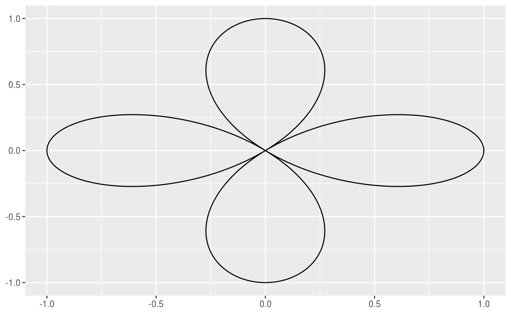
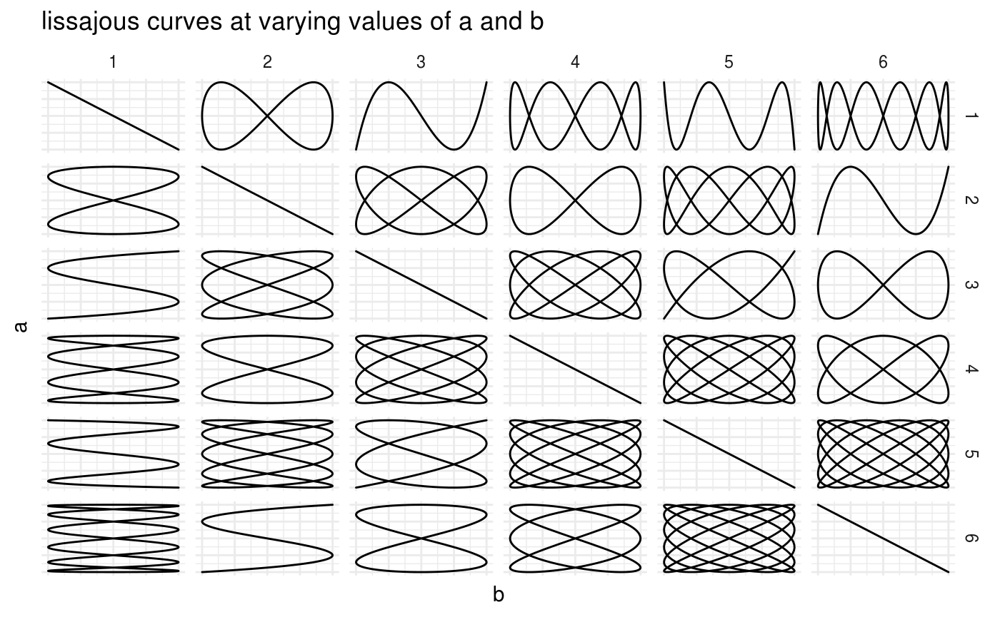
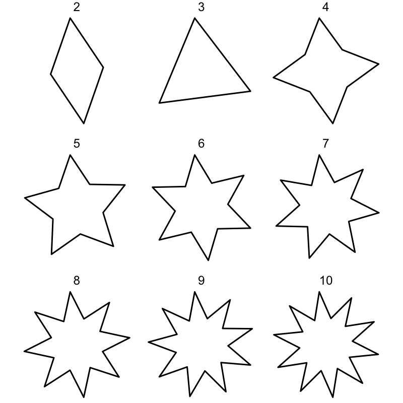

The goal of ggshapes is to add more shapes such and stars and other curves to ggplot2 the same way ggforce adds regular polygons and circles.
Installation
You can install the released version of ggshapes from CRAN with:
And the development version from GitHub with:
Examples
ggshapes provides many closed curves, one of which is the simple rose curve.
library(ggshapes)
#> Loading required package: ggplot2
ggplot() +
geom_rose(aes(n = 2, d = 1, c = 0)) 
Each of these geoms comes with some tuning parameters that result in widely different curves so you should play around.
data <- data.frame(a = rep(1:6, times = 6),
b = rep(1:6, each = 6),
delta = 1)
ggplot(data) +
geom_lissajous(aes(a = a, b = b, delta = delta)) +
facet_grid(a ~ b) +
labs(title = "lissajous curves at varying values of a and b", x = "b", y = "a") +
theme_minimal() +
theme(axis.ticks.y = element_blank(),
axis.text.y = element_blank(),
axis.ticks.x = element_blank(),
axis.text.x = element_blank())
ggshapes doesn’t natively work with gganimate but gifs can be hacked together using gifski.
library(gifski)
makeplot <- function(){
data <- expand.grid(tips = 2:10, time = seq(0, pi * 2, length.out = 50)[-1])
datalist <- split(data, data$time)
lapply(datalist, function(data){
p <- ggplot(data) +
geom_star(aes(n_tips = tips, rotation = time)) +
coord_fixed() +
theme_void() +
xlim(-1, 1) +
ylim(-1, 1) +
facet_wrap(~tips)
print(p)
})
}
gif_file <- save_gif(makeplot(), width = 800, height = 800, res = 200, delay = 0.01, gif_file = "man/example.gif")
Design choices
All the geoms that produces closed curves (under certain choice of parameters) comes with a couple of geom specifit tuning parameters (n, d and c for geom_star()) and some shared aesthetics
- x0
- y0
- xscale
- yscale
- rotation
which denote the x and y coordinate of the center, the x and y scaling of the curve and its rotation in radians. By defaults the geoms produces curves bounded between -1 and 1, centered around (0, 0). Rotation is not applied by default. If rotation and scaling is applied then the curve will not be bounded anymore (as it retains its scale).
Inspiration
The original inspiration for this package came from the post film flowers by Shirley Wu which drove me to the realization that such visualizations are quite the hassle to do in ggplot2 right now.